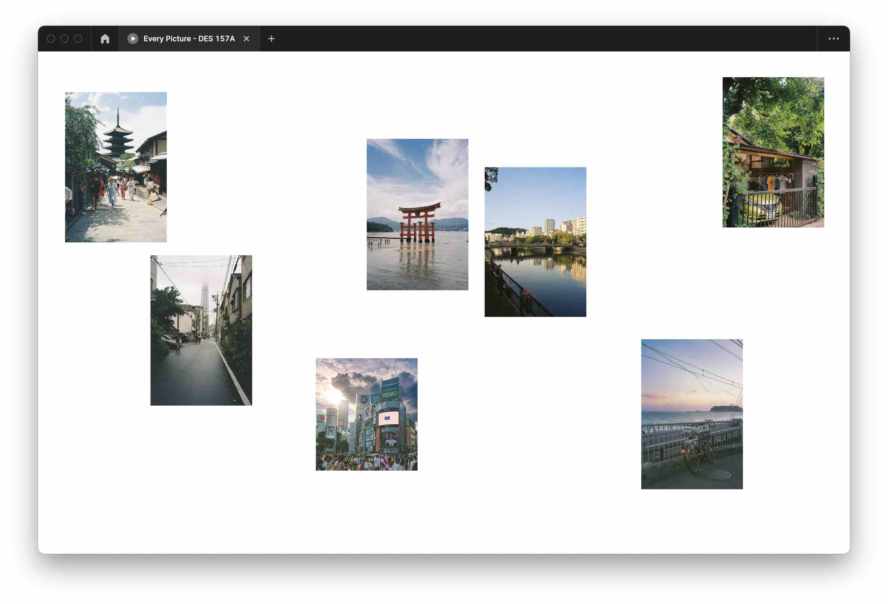

Final Project Report
Introduction
Key Findings
Improving affordances: Letting users know that images are clickable by switching the cursor to a pointer and/or adding instructions.
Simplifying navigation: Removing the ability to swap overlays; users would prefer to select an image from the gallery page instead of clicking to the next overlay without knowing which one is coming up.
Decrease cognitive load: Make each image larger so that there are less in the viewport at a time instead of having all seven visible at once.
Tester Profile
Both users are college students. User #1 is male, age 18, and interested in photography. User #2 is female, age 21, and has had several years of experience with film photography. Both users tested a prototype designed for desktop.
When searching for appropriate users, I made sure to find people who had an interest in photography, as that coincides with my target audience.
Task List
- Learn more about the significance of Arashiyama
- Navigate to the page about Hiroshima
Results
Bugs
Not related to code, but there is no way to prototype a hover and click interaction in Figma for the same element. Thus, during user testing, I had to instruct the user to use an alternative trigger: pressing the spacebar in place of clicking.
If the user scrolls too quickly at the beginning of the camera animation, the switch does not trigger and the overlay remains visible.
Usability Problems
- There was no indication that the images on the gallery page were clickable
- Users were not likely to click next to find a specific image, they would prefer to choose from the gallery page
- It would be easier to see the images in the gallery view if each one was larger
Other Feedback
- Users thought the camera animation triggered by scrolling was cool
- The transition from black to white background was dramatic and helped acclimate the users to where they were within the narrative of the site
- They also really liked the images and how the curation fed into a larger overarching theme